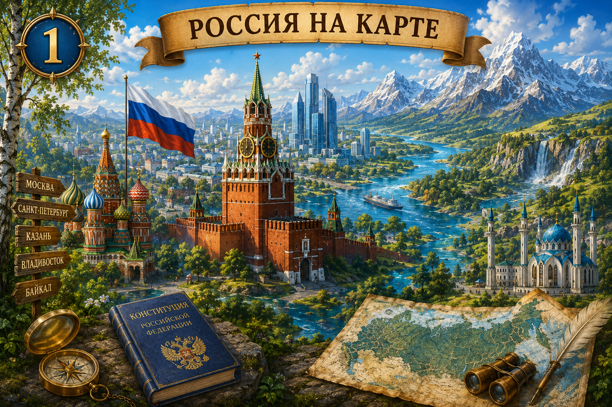
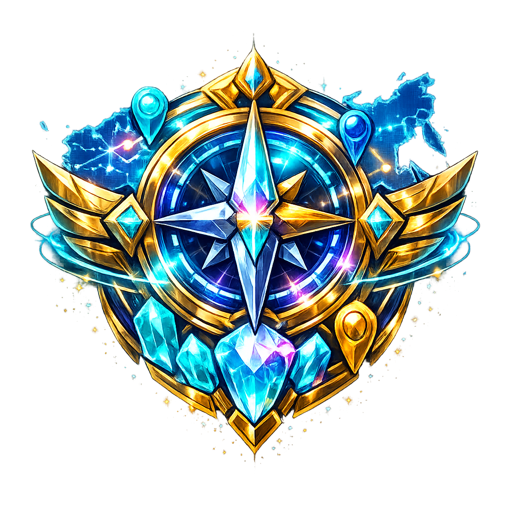

Тайна Атласа
Задание экспедиции
Страница Атласа возвращена!


Атлас пробуждается...
Волшебный филин-путешественник будет хранить открытые тобой тайны.
Награды, результаты и история приключений будут удалены. Это действие нельзя отменить.
✦ ✧ ✦
Поздравляем! Ты прошёл все уникальные задания курса «Окружающий мир»!
Все темы исследованы. Теперь можно начать новый круг приключений.